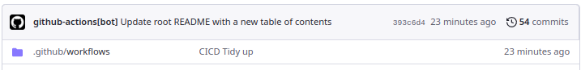

Markdown Folder to HTML for Blog #
A reusable workflow which can create docs-style html folder out of folder.
Table of Contents #
| Section |
|---|
| Abstract and Introduction |
| Related Projects |
| Project Goals |
| Project Requirements |
| Tags |
| Main |
| Potential CICD Pipelines that could be used |
| Issues encountered |
| Setting up the CICD |
Abstract and Introduction #
This project, which is available here https://github.com/joakin/markdown-folder-to-html could be used to make a html site for this whole repository. It would be a good way to organize the projects and make them easier to navigate. It would also be a good way to learn how to use the project.
Being a core idea of this potential-projects-repo, it would be a good idea to use this project to create a html site for this repository. It would be a good way to learn how to use the project and also to make the projects easier to navigate.
Did the project live? #
This whole website is described in this project. Some parts are currently up like GitHub pipelines but
the whole site is not up yet. Part that is missing is rendering the markdown files into html files.
If you are reading this, you will know it is up :) !!!
Related Projects #
Project Goals #
- Create a html site for this repository using markdown-folder-to-html
- Create a script to automatically update the html site when a new project is added
- Host the html site on GitHub Pages or something cheap like S3
Project Requirements #
Tags #
CICD, GitHub, Markdown, HTML, JavaScript, Node.js
Main #
Markdown to html docs would be useful(even for this page) to create a static HTML content out of folder full or markdown. It could be used to make simple blogs where users without huge amount of technical knowledge could just learn a bit of github and start writing. Advantage of a github way would also be ability to leverage all user permissions stuff and data flows that github offer, which could result in a system where articles would need to be approved, spelling checks on pull requests, etc.
Potential CICD Pipelines that could be used #
- Spellcheck on creating pull request
- Creating appropriate folder structure on opening a new issue
- Automatically making a table of contents on the main landing page
Issues encountered #
Setting up the CICD #
Took me a while to figure out that you need to specify the permissions for the GITHUB_SECRET key which is used to authenticate with your repository.
I kept getting the following error:
Run git config user.name github-actions
[main 1fc720e] Update root README with a new table of contents
1 file changed, 3 insertions(+)
remote: Permission to ivica3730k/potential-project-ideas.git denied to github-actions[bot].
fatal: unable to access 'https://github.com/ivica3730k/potential-project-ideas/': The requested URL returned error: 403
Error: Process completed with exit code 128.
It turns out that the solution was to add the following lines on top of the workflow file, granting the GITHUB_SECRET key the permission to write to the repository:
permissions:
contents: write
The end result should look like this:
name: Update Table of Contents on Push to Main
permissions:
contents: write
on:
push:
branches:
- main
jobs:
update-table-of-contents:
runs-on: ubuntu-latest
steps:
- name: Checkout code
uses: actions/checkout@v3
with:
token: ${{ secrets.GITHUB_TOKEN }}
- name: Run Python Command
run: python3 migrate_table_of_contents.py
- name: Set up Git
run: |
git config user.name github-actions[bot]
git config user.email github-actions[bot]@users.noreply.github.com
git add index.md && git commit -m "Update root README with a new table of contents"
- name: Push changes
run: |
git push origin main
Figuring this out took a while and I had to make a lot of commits to the repository to figure out what was wrong. .